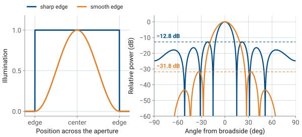
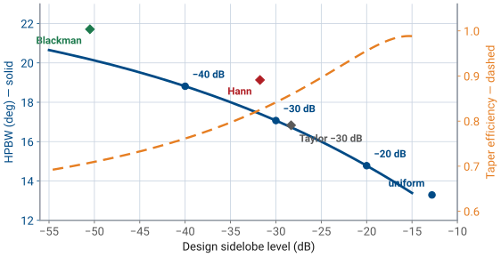

L24 - Sidelobes and Tapering Theory#
Sidelobes and Tapering Theory
Sidelobe level is set by the shape of the illumination, and shape is something you control.
Lesson 24 · Antennas, Phased Arrays, and Radar Systems · Dr. Neil Rogers
Learning Objectives
- I can explain why the uniform taper has the highest sidelobes and why every smoother taper trades beamwidth for them.
- I can compare uniform, cosine-family, Chebyshev, and Taylor tapers by sidelobe level and beam broadening.
- I can compute taper efficiency and the coherent peak drop for a discrete taper.
- I can select a taper to meet a sidelobe specification and state its costs.
- I can convert a taper's element amplitudes to the PHASER's per-element gain settings.
Where we were
In Lesson 23 you swept the PHASER’s pattern and wrote down its sidelobes: a pair about 13 dB below the peak at roughly \(\pm 22^\circ\), then a ragged skirt out to the edges of visible space. Those sidelobes are not a defect in the array, and no amount of careful alignment will remove them. They are the direct consequence of driving all eight elements at the same amplitude, and you can trade them away for something else you value less. This lesson is how that trade works, what it costs, and how to pick a taper that meets a stated sidelobe specification.
Why sidelobes exist: the Fourier reading
Lesson 15 established the Fourier relationship between an aperture and its pattern: the far-field pattern is the transform of the aperture illumination, and the transform variable is the space frequency \(k_z = k\sin\theta\). Read that relationship backwards and the sidelobes stop being mysterious. A uniformly illuminated aperture is a rectangle in space — full amplitude everywhere across the array, then nothing at all one element spacing beyond the ends. An abrupt edge is a discontinuity, and a discontinuity carries energy at every spatial frequency. The transform of a rectangle is a sinc, and a sinc has ripples that decay only as \(1/u\). Those ripples are the sidelobes.
Why sidelobes exist: the phasor reading
The same statement in array language: the eight element voltages add in phase at broadside, and away from broadside they fall out of step. At the first null they cancel exactly. Just past that null they do not cancel — seven of the eight phasors still partially reinforce — and the residue is the first sidelobe. For the PHASER’s eight elements the residue is \(-12.8\ \text{dB}\) relative to the peak, which is the number your sweep measured. For a continuous uniform aperture the same argument gives \(-13.3\ \text{dB}\). Both are properties of the shape of the illumination, not of its size: adding elements narrows the main lobe and moves the sidelobes inward, but it does not lower them.
A rectangular illumination beside a tapered one

Softening the edge softens the pattern
Softening the edge softens the pattern. If the illumination approaches zero gradually instead of stopping dead, the high space-frequency content that fed the sidelobes is no longer there, and the sidelobes drop. That gradual reduction of element amplitude from the center of the array toward its ends is called an amplitude taper, and every one of the tapers below is a different rule for how fast to fall off.
Why low sidelobes matter to a system engineer
A sidelobe is a direction the antenna is listening to when you did not ask it to. A search radar at \(-13\ \text{dB}\) sidelobes sees ground clutter through those lobes at only one twentieth of its main-beam sensitivity, which is nowhere near enough when the clutter is 40 dB stronger than the target. A communications terminal with high sidelobes receives an adjacent satellite it was never pointed at, and transmits into one. A jammer off to the side does not need to be in your beam to deny it — it only needs to be in a sidelobe. Lesson 27 attacks that last problem directly by placing a null on the jammer; tapering is the cheaper, non-adaptive answer that lowers every sidelobe at once.
What a taper is
A taper is a set of element amplitudes \(a_n\), \(n = 1 \ldots N\), normalized so the largest is 1. Three families cover essentially all practical work, and they differ in what they optimize.
Cosine on pedestal
The cosine-on-pedestal family is defined by a shape rather than by a specification. Let \(p\) be position across the aperture normalized to its length, so \(p\) runs from \(-1/2\) to \(+1/2\). Then
where the pedestal \(P\) is the amplitude left at the edges. Setting \(P = 1\) gives the uniform taper, \(P = 0\) gives the Hann taper (a full cosine-squared falling to zero), and \(P = 0.08\) gives the Hamming taper. The PHASER GUI’s Hann preset is exactly this shape sampled at the eight element positions and renormalized:
Cosine on pedestal — sidelobe and beamwidth by pedestal
Pedestal \(P\) |
\(a_n\) (%) |
First sidelobe |
HPBW |
\(\eta_t\) |
|---|---|---|---|---|
1.00 (uniform) |
100, 100, 100, 100 |
\(-12.8\) dB |
\(13.2^\circ\) |
1.000 |
0.50 |
57, 72, 89, 100 |
\(-18.8\) dB |
\(14.8^\circ\) |
0.959 |
0.25 |
35, 57, 83, 100 |
\(-25.8\) dB |
\(16.2^\circ\) |
0.884 |
Cosine on pedestal — sidelobe and beamwidth by pedestal, continued
Pedestal \(P\) |
\(a_n\) (%) |
First sidelobe |
HPBW |
\(\eta_t\) |
|---|---|---|---|---|
0.08 (Hamming) |
19, 47, 79, 100 |
\(-33.0\) dB |
\(17.9^\circ\) |
0.800 |
0.00 (Hann) |
12, 43, 77, 100 |
\(-31.8\) dB |
\(19.1^\circ\) |
0.750 |
Only the inner four values are listed; the taper is symmetric, so elements 5 through 8 mirror elements 4 through 1.
Why Hamming beats Hann on every count
Read the table downward and the trade is already visible: every step toward a smoother edge lowers the sidelobes and widens the beam. Note also that Hamming beats Hann on all three counts. Leaving a small pedestal at the edge cancels the first sidelobe of the cosine term against the first sidelobe of the pedestal, which is why \(P = 0.08\) is a named taper and not an arbitrary choice.
Chebyshev — the defining property
The Chebyshev (Dolph) taper starts from the specification instead. You state the sidelobe level you want, and Dolph’s construction returns the amplitudes that achieve it with the narrowest possible main lobe. The defining property is equal ripple: every sidelobe in the pattern sits at exactly the design level, none higher and none lower. That is what makes it optimal. A taper whose far sidelobes fall below the specification is delivering suppression nobody asked for, and it widened the main lobe to get it.
Chebyshev — the construction
The construction itself uses the Chebyshev polynomial \(T_{N-1}\), whose ripples between \(-1\) and \(+1\) are the equal sidelobes and whose runaway growth beyond \(x = 1\) is the main lobe. For an eight-element array the amplitudes come from matching
where \(R = 10^{\text{SLL}/20}\) is the voltage ratio between the peak and the sidelobes. You will not be asked to carry that expansion out by hand. The widget below does it numerically, and the results for the three designs you will use are in the next table.
Family 3: Taylor
The Taylor taper is the one large radars are built with. A true Chebyshev design on a big aperture puts sharp spikes of current at the array edges, which is hard to build and gives up efficiency. Taylor’s design holds only the first \(\bar{n} - 1\) sidelobe pairs at the design level and lets the rest decay like a uniform aperture’s, which removes the edge spikes and costs almost nothing in beamwidth. The parameter \(\bar{n}\) is how many sidelobes you insist on controlling; \(\bar{n} = 4\) to \(6\) is typical.
Seven tapers on eight elements
Taper (8 elements, \(d/\lambda = 0.481\)) |
\(a_n\) (%) |
Highest sidelobe |
HPBW |
Broadening |
\(\eta_t\) |
|---|---|---|---|---|---|
Uniform |
100, 100, 100, 100 |
\(-12.8\) dB |
\(13.2^\circ\) |
1.00 |
1.000 |
Chebyshev \(-20\) dB |
58, 66, 88, 100 |
\(-20.0\) dB |
\(14.8^\circ\) |
1.12 |
0.956 |
Chebyshev \(-30\) dB |
26, 52, 81, 100 |
\(-30.0\) dB |
\(17.1^\circ\) |
1.30 |
0.841 |
Chebyshev \(-40\) dB |
15, 42, 76, 100 |
\(-40.0\) dB |
\(18.8^\circ\) |
1.42 |
0.761 |
Seven tapers on eight elements, continued
Taper (8 elements, \(d/\lambda = 0.481\)) |
\(a_n\) (%) |
Highest sidelobe |
HPBW |
Broadening |
\(\eta_t\) |
|---|---|---|---|---|---|
Taylor \(-30\) dB, \(\bar{n} = 4\) |
29, 53, 82, 100 |
\(-28.3\) dB |
\(16.8^\circ\) |
1.27 |
0.853 |
Hann |
12, 43, 77, 100 |
\(-31.8\) dB |
\(19.1^\circ\) |
1.45 |
0.750 |
Blackman |
6, 27, 66, 100 |
\(-50.5\) dB |
\(21.7^\circ\) |
1.64 |
0.655 |
The Taylor row shows both sides of the compromise
The Taylor row shows both sides of the compromise. On only eight elements the sampled Taylor distribution does not hold its sidelobes exactly on the design line — the highest one lands at \(-28.3\ \text{dB}\) rather than \(-30\) — but it gets a narrower beam and a higher efficiency than the Chebyshev design it is approximating. Sample a Taylor distribution on a 64-element array and the sidelobes land where they were designed to.
Five tapers on the eight-element array
Work through the widget before reading on. Step through the five tapers and watch three things at once: the bars redistribute amplitude away from the array edges, the main lobe widens, and the sidelobes drop. On the three Chebyshev settings, check that every sidelobe touches the dashed design line — that equal ripple is the whole point of the family, and it is what separates a Chebyshev design from a window function that happens to reach a similar level.
Cost 1: the beam gets wider
Tapering has three separate costs, and two of them are routinely confused with each other.
Cost 1: the main lobe gets wider. The physical aperture is unchanged, but the effective aperture is smaller because the outer elements now contribute less. Beamwidth scales as \(0.886\ \lambda/(N d)\) for the uniform case, and a taper multiplies that by a beam broadening factor between about 1.1 and 1.7. The broadening column in the table above is that factor. Deeper sidelobes always cost more broadening, and the widget’s beamwidth readout is the direct measurement of it.
Cost 2: taper efficiency — the setup
Cost 2: taper efficiency. Consider the array on receive, looking at a source on boresight. Every element sees the same signal with the same phase, so the beamformer output voltage is \(\sum a_n\) times the per-element signal voltage, and the output signal power goes as \(\left(\sum a_n\right)^2\). Each channel also adds its own noise, independently of the others, so the noise powers add rather than the voltages, and the output noise goes as \(\sum a_n^2\). The signal-to-noise ratio is therefore proportional to \(\left(\sum a_n\right)^2 / \sum a_n^2\). For a uniform taper that ratio is \(N^2/N = N\). Normalizing by the uniform case gives the taper efficiency
Cost 2: taper efficiency — the result
For a uniform taper that ratio is \(N^2/N = N\). Normalizing by the uniform case gives the taper efficiency
The same expression comes out of the transmit calculation, where the peak radiated intensity goes as \(\left(\sum a_n\right)^2\) and the total radiated power as \(\sum a_n^2\), so \(\eta_t\) is equally the fraction of the uniform array’s directivity that the tapered array retains. It is a pure ratio, unchanged if you scale every \(a_n\) by the same factor, and it is always \(\le 1\) with equality only for the uniform taper.
Cost 3: the peak of the measured trace drops
Cost 3: the peak of the measured trace drops. This is a different number, and it is the one you will read off the screen next lesson. The GUI’s beam sweep plots received power against commanded steer angle, and it does not renormalize between runs. Setting six of the eight Element Gains sliders below 100% throws away signal voltage, and the peak of the tapered trace lands
below the uniform trace’s peak. This is a coherent voltage loss, not a directivity loss. The noise was attenuated along with the signal, so the array’s sensitivity did not fall by this much, but the plotted peak did.
Key point
The two dB numbers are related, and keeping them separate is the difference between reading a sweep correctly and misreading it:
The first term on the right is the directivity you gave up. The second term is the average power gain of the eight channels — the signal you simply turned down.
Key point, continued
For the Hann preset the split is \(-4.7 = -1.2 - 3.5\) dB. Only \(1.2\) dB of that \(4.7\) dB is a loss of antenna performance; the remaining \(3.5\) dB would come straight back if the hardware let you scale all eight gains up by the same factor. It does not, because 100% is already full scale.
Designing to a specification
The design problem is stated the way a customer states it: hold the sidelobes below some level, and tell me what it costs. The procedure is short.
Pick the family. Use Chebyshev when the specification is a hard ceiling on every sidelobe and the array is small. Use Taylor when the array is large or the edge elements cannot be driven that hard. Use a cosine-on-pedestal window when you want a shape rather than a specification, or when the beamformer only offers named presets.
Compute the amplitudes and normalize the largest to 1.
Evaluate the three costs: broadening, \(\eta_t\), and the peak drop.
Check the result against the hardware’s amplitude resolution, because a taper the hardware cannot set is a taper you do not have.
Worked example — a −30 dB design on the eight-element array
Worked example — a \(-30\) dB design on the eight-element array
Specification. No sidelobe above \(-30\ \text{dB}\) relative to the peak, on \(N = 8\) elements at \(d/\lambda = 0.481\), broadside.
Amplitudes. The voltage ratio is \(R = 10^{30/20} = 31.62\), giving \(x_0 = \cosh\left(\cosh^{-1}(31.62)/7\right) = 1.181\). Carrying out the Dolph construction and normalizing to the center pair gives
Worked example — a −30 dB design on the eight-element array, continued
Worked example — a \(-30\) dB design on the eight-element array, continued
Taper efficiency. With \(\sum a_n = 5.18\) and \(\sum a_n^2 = 3.988\),
Peak drop on the trace.
Worked example — a −30 dB design on the eight-element array, continued
Worked example — a \(-30\) dB design on the eight-element array, continued
Beamwidth. The pattern measures \(17.1^\circ\) at half power against \(13.2^\circ\) uniform, a broadening factor of 1.30.
Result. Sidelobes drop from \(-12.8\) to \(-30\) dB, a 17 dB improvement. The beam widens from \(13.2^\circ\) to \(17.1^\circ\), the array loses \(0.75\ \text{dB}\) of directivity, and the displayed peak falls \(3.8\ \text{dB}\).
Worked example — a −30 dB design on the eight-element array, continued
Worked example — a \(-30\) dB design on the eight-element array, continued
Compare against the obvious alternative. The Hann window reaches a similar \(-31.8\ \text{dB}\), but its beam is \(19.1^\circ\) and its efficiency is 0.750. The Chebyshev design gets the same sidelobe suppression with a \(2^\circ\) narrower beam and \(0.5\ \text{dB}\) more directivity. That is Dolph optimality doing its job: for a stated sidelobe level, no other set of amplitudes gives a narrower main lobe.
The whole design space, on one curve

Chebyshev designs run the curve
The curve is the whole design space for this array. Chebyshev designs run along it and the window functions sit above it, which is the geometric statement of Dolph optimality: Blackman reaches \(-50\ \text{dB}\) with a \(21.7^\circ\) beam, where the Chebyshev design at the same sidelobe level needs only \(20.1^\circ\). The slope of the solid curve is the beamwidth a decibel of suppression takes. On eight elements the beam widens about \(0.2^\circ\) per decibel of suppression across the whole range, and the efficiency falls from 1.00 to 0.71 over the same span.
What stops you from going deeper
What stops you from going deeper is not the curve but the hardware and the instrument. The \(-50\ \text{dB}\) design puts its outer elements at 9% of full scale, where the gain word’s 1% step is an 11% error on that element, and the sidelobes it was designed for will not survive that. The beam sweep’s noise floor sits about 23 dB below the uniform peak, so a design deeper than roughly \(-20\ \text{dB}\) relative to its own peak cannot be confirmed on this bench at all. Specifying \(-50\ \text{dB}\) when \(-30\ \text{dB}\) would do gains nothing you can measure and gives up beamwidth, directivity, and setting accuracy.
Loading a taper into the PHASER
The PHASER’s ADAR1000s set a gain as well as a phase on every element, and the course GUI exposes those as the Element Gains sliders Rx1 through Rx8, in percent of full scale. Converting a design to hardware settings is one line:
Two limits worth knowing
Normalize to the largest element, not to the sum, because the sliders cannot exceed 100%. For the worked example above you would enter 26, 52, 81, 100, 100, 81, 52, 26 and turn on Enforce Symmetric Taper so a slip on one slider is mirrored rather than left as an asymmetry. Two limits are worth knowing before you type:
The gain word resolves to about 1%, so the entered taper is quantized. Rounding the \(-30\ \text{dB}\) design to whole percent moves its highest sidelobe to \(-29.9\ \text{dB}\), which is harmless. Trying to hold a \(-50\ \text{dB}\) design to 1% amplitude steps is not, and Lesson 26 makes the general version of that argument for phase.
You can only go down. Every taper therefore costs peak signal on the trace, and the GUI’s Peak Array Gain readout will fall by the amount computed in Part 3.
What L25 will measure
The GUI ships four presets. Their gain lists and what the sweep reads for each are below; predict these numbers now, because next lesson you will measure them.
Preset |
\(a_n\) (%) |
Theory HPBW |
Measured HPBW |
Peak drop |
First sidelobe |
|---|---|---|---|---|---|
Uniform |
100, 100, 100, 100 |
\(13.2^\circ\) |
\(13.1^\circ\) |
\(0\) dB |
\(-11\) to \(-13\) dBc |
Hann |
12, 43, 77, 100 |
\(19.1^\circ\) |
\(19.5^\circ\) |
\(-4.7\) dB |
below the noise floor |
Blackman |
6, 27, 66, 100 |
\(21.7^\circ\) |
\(23.1^\circ\) |
\(-6.1\) dB |
below the noise floor |
Chebyshev |
4, 23, 62, 100 |
\(22.9^\circ\) |
\(24.3^\circ\) |
\(-6.5\) dB |
below the noise floor |
Two things in that table need explaining
Two things in that table need explaining. First, the measured beamwidths run one to two degrees wide of theory because the sweep steps the commanded angle by the phase LSB, \(2.8125^\circ\), so the trace is sampled on a coarse grid and the half-power crossings are found late. Second, the sidelobe column says “below the noise floor” rather than giving a number. The sweep’s floor sits about 23 dB below the uniform peak, and every tapered preset here pushes its sidelobes under that. You will be able to state an upper bound on the sidelobes next lesson, not a value.
A note on the GUI’s Chebyshev preset
Note
The GUI’s Chebyshev preset is not the \(-30\ \text{dB}\) design worked above. Its gain list of 4, 23, 62, 100 corresponds to a far more aggressive specification: the resulting pattern never rises above \(-70\ \text{dB}\) anywhere in visible space, so it has no sidelobe you could measure on any equipment in the lab. That is why the useful prediction for it is its beamwidth, \(22.9^\circ\) from theory against a measured \(24.3^\circ\), and not its sidelobe level. It is a working example of the over-specification described in Part 4: the design is about 45 dB deeper than the instrument can show, and it costs a beam almost twice as wide as uniform.
Summary — sidelobes and the cosine family
Symbol / idea |
What it is |
Number to remember |
|---|---|---|
Sidelobes |
Set by the shape of the illumination, not its size |
Uniform: \(-12.8\) dB for \(N = 8\), \(-13.3\) dB continuous |
Amplitude taper \(a_n\) |
Element amplitudes, normalized so \(\max a_n = 1\) |
Softer edge \(\rightarrow\) lower sidelobes, wider beam |
Cosine on pedestal |
\(a(p) = P + (1-P)\cos^2(\pi p)\) |
Hann (\(P = 0\)): \(-31.8\) dB, \(19.1^\circ\) |
Summary — Chebyshev, Taylor, and broadening
Symbol / idea |
What it is |
Number to remember |
|---|---|---|
Chebyshev (Dolph) |
Equal ripple; narrowest beam for a stated sidelobe level |
\(-30\) dB on 8 elements: 26, 52, 81, 100 (%) |
Taylor \(\bar{n}\) |
Chebyshev’s buildable cousin; first \(\bar{n}-1\) lobes held, rest decay |
\(-30\) dB, \(\bar{n} = 4\): 29, 53, 82, 100 (%) |
Beam broadening |
HPBW multiplier relative to uniform |
1.12 at \(-20\) dB, 1.30 at \(-30\) dB, 1.42 at \(-40\) dB |
Summary — costs and hardware
Symbol / idea |
What it is |
Number to remember |
|---|---|---|
Taper efficiency \(\eta_t\) |
\((\sum a_n)^2 / (N \sum a_n^2)\); the directivity you keep |
\(-30\) dB Chebyshev: \(0.841\), i.e. \(-0.75\) dB |
Peak drop |
\(20\log_{10}(\sum a_n / N)\); the coherent loss on the trace |
Hann preset: \(-4.7\) dB, of which only \(-1.2\) dB is directivity |
PHASER conversion |
\(\text{Rx}_n\ (\%) = 100\ a_n / \max a_n\) |
Sliders cap at 100%, resolve to about 1% |
Practice
Where this is going
Next lesson you take these four presets to the bench. You will sweep each one, measure the beamwidth and the peak drop, and reconcile them against the predictions in the Part 5 table. You will also hand-enter the \(-30\ \text{dB}\) Chebyshev design from Part 4, which is not one of the presets, and confirm that a taper you computed yourself behaves the way the arithmetic said it would. Come with the Part 5 table copied into your lab notebook; the point of the exercise is the comparison, and it is much weaker if you write the predictions down after seeing the measurements.
Where this is going, continued
After that, Lesson 26 turns to the other three ways a real steered array departs from the ideal pattern — grating lobes, beam squint across the band, and phase quantization — none of which a taper fixes. Lesson 27 returns to sidelobes with a sharper tool: instead of lowering all of them, place a deep null on the one direction that is hurting you. The subject comes back for good in Module 4, where the clutter a radar competes with arrives almost entirely through the sidelobes, and the taper you choose sets how much of it you have to process away.